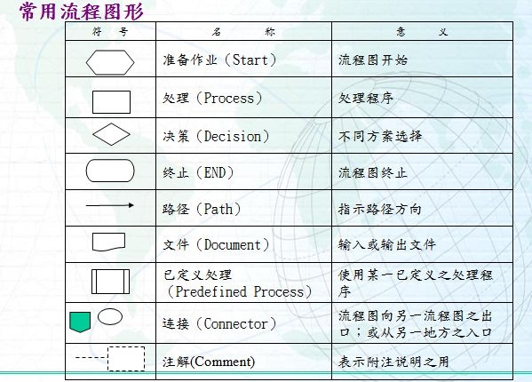

sequetest
seque 图测试
sequence
js-sequence-diagrams
Turns text into UML sequence diagrams
流程图 含义

1. example
Andrew->China: Says Hello
Note left of Andrew: China thinks about it
Note right of China: China thinks about it
China-->Andrew: How are you?
Andrew->>China: I am good thanks!
2. normal|dash LINE, normal|open ARROW
Title: Here is a title
A->B: Normal line
B-->C: Dashed line
C->>D: Open arrow
D-->>A: Dashed open arrow
3. note
Note left of A: Note to the\n left of A
Note right of A: Note to the\n right of A
Note over A: Note over A
Note over A,B: Note over both A and B
4. participant
participant C
participant B
participant A
Note right of A: By listing the participants\n you can change their order
5. test xu
A->B:hello world
A->C: test
B-->A:fuck you
B--C: test you
C-->>A:hello you
flow
1. example 1
st=>start: Start:>http://www.google.com[blank]
e=>end:>http://www.google.com
op1=>operation: My Operation
sub1=>subroutine: My Subroutine
cond=>condition: Yes
or No?:>http://www.google.com
io=>inputoutput: catch something...
st->op1->cond
cond(yes)->io->e
cond(no)->sub1(right)->op1
2. example 2
st=>start: Start|past:>http://www.google.com[blank]
e=>end: End|future:>http://www.google.com
op1=>operation: My Operation|past
op2=>operation: Stuff|current
sub1=>subroutine: My Subroutine|invalid
cond=>condition: Yes
or No?|approved:>http://www.google.com
c2=>condition: Good idea|rejected
io=>inputoutput: catch something...|future
st->op1(right)->cond
cond(yes, right)->c2
cond(no)->sub1(left)->op1
c2(yes)->io->e
c2(no)->op2->e
3. test xu
st=>start: Start|past:>http://www.google.com[blank]
e=>end: End|future:>http://www.google.com
op1=>operation: 1
op2=>operation: 2
sub1=>subroutine: 3
c1=>condition: 4
c2=>condition: 5
io1=>inputoutput: 6
st->op1(right)->c1
c1(yes, right)->c2
c1(no)->sub1(left)->op1
c2(yes)->io1->e
c2(no)->op2->e
hello
st=>start: 开始|past:>http://www.google.com
e=>end: 结束|future:>http://www.google.com
op1=>operation: My Operation|past
op2=>operation: Stuff|current
sub1=>subroutine: My Subroutine|invalid
cond=>condition: Yes
or No?|approved:>http://www.google.com
c2=>condition: Good idea|rejected
io=>inputoutput: catch something...|future
st->op1(right)->cond
cond(yes, right)->c2
cond(no)->sub1(left)->op1
c2(yes)->io->e
c2(no)->op2->e